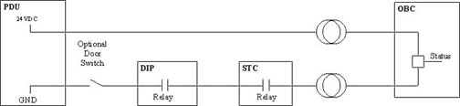

Proprietary to General Electric
Direction 5114043-800, Rev# 9
LightSpeed 3.X Service Methods (Advanced)
Proprietary to General Electric |
Description: Test energizes the contactor for the prescribed amount of time + 2 seconds. The two second delay prevents the rail monitor from detecting false errors. Contactor operation and statuses are verified during test.
Description: Test the exposure command, backup timer, and contactor interlock by setting the backup timer and allowing it to expire.
The following describes the order of events:
The timer is downloaded with the selected test duration.
Contactor is energized.
The STC activates the exposure command.
The exposure command is verified.
Timer is allowed to expire.
Backup contactor and timer are checked for the correct states.
The test is repeated for both clock frequencies.
Timer duration is compared to system clock. Only large discrepancies are reported (>150mSec).
Total test duration is twice the selected time.
Description: Reads and display the gentry I/O status for operational verification. Gentry I/O status information is displayed to the user. Except for the monitoring functions, no further testing is performed.
Troubleshooting notes:
Displays the expected and actual tube ID.
Tube, anode tank, and cathode tank pressure statuses are displayed.
Relay driver statuses are displayed for operational verification.
| NOTE: | This test does not display system interlock status since the interlock is kept open when not needed during diagnostic testing. |
Description: KV, mA, and rail voltage values are displayed for testing meter accuracy. Test enables user to inject known voltages into the system for the purpose of meter calibration.
Description: manual operation of the tube relay, pump, and fans. Enables tube fans and pumps for a given duration. Test has no effect if fans are already running.
Description: manually operate the alignment lights, power supply, and driver.
This test enables the alignment lights for a given duration.
Test enables user to isolate between table control problems and OBC.
Gantry must be at 180 degrees to view alignment lights.
Description: Read and display the OBC power supplies for the correct operating range. Supplies out of range are highlighted and reported to the error log.
Troubleshooting notes: The 15VDC supply is monitored after the gentry I/O 15VDC inductor causing a 0.2 - 0.3 volt error.
Description: This test displays the OBC temperatures and limits for a given duration. Thermistors found open are reported as such (0VDC). Temperatures found out of range are highlighted and reported to the log.
Thermistors read:
Gantry ambient
OBC ambient
This test verifies the operation of the exposure interlock. The operator can loop on an error indefinitely or continue the test.
Illustration 1: Exposure Interlock Testing

Insure both jumpers are installed in the Artesyn boards for 20MHz operation.
The DCB must have a terminator connected to the RCIB connection.
Insure the 50 ohm inline terminator is installed at the ETC ethernet connection.
Check the slip-ring stats, when troubleshooting LAN watchdog errors.
Perform X-Ray Interlock Check.
Perform X-Ray Exposure Manual Check.